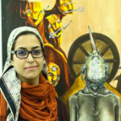
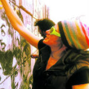

Khadija El-Ghawas
Khadiga Tarek, known as Khadiga El-Ghawas, is an Egyptian graffiti artist who became the First Light Calligrapher in Egypt and the first woman in the world to be mastering this art. In 2011, Khadiga won the first place in an important Contemporary Calligraphy Competition in the Bibliotheca Alexandrina's calligraphy center called "Revolution in Arabic Calligraphy Eyes". After that she went to a calligraphy school to complete her calligraphy studies. In April 2013 she began her Light Calligraphy work inspired by Julian Breton's Light Calligraphy, and she started to make her own version of this art.
Lamis Solyman
Lamis Solyman is visual artist and production designer. She believes that graffiti helps her deliver a simple message of being a woman, a human being deserving of all rights . She uses graffiti as a tool to talk about youth, gender, and politics.
Mira Shihadeh
Mira Shihadeh uses graffiti to bring attention to Egyptian women who fight for social and political justice in a country where they are inherently oppressed because of their sex. In one of her murals , she makes a statement with a work of street art depicting an Arab woman in a tightly-fitted red dress, one hand on hip, the other brandishing a spray can with the nozzle pressed down, spraying her assailants away.